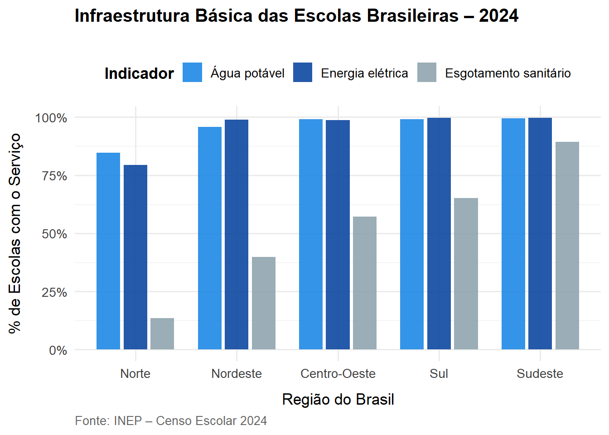
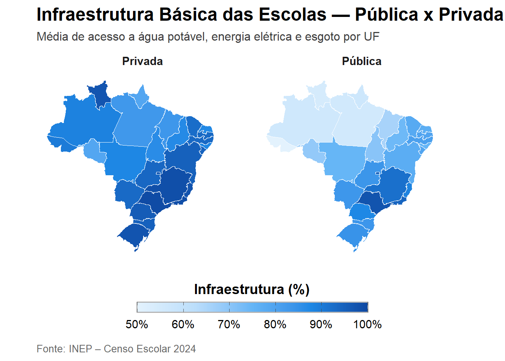
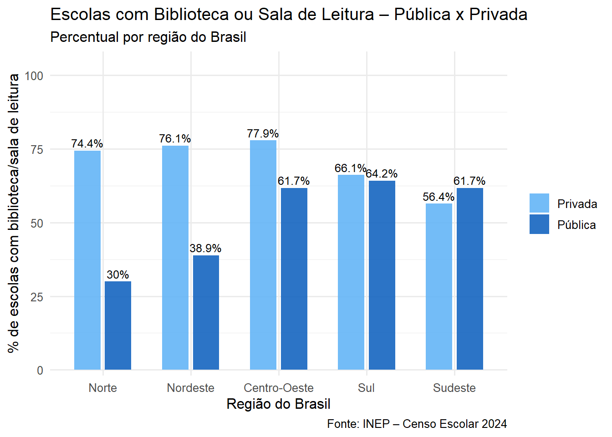
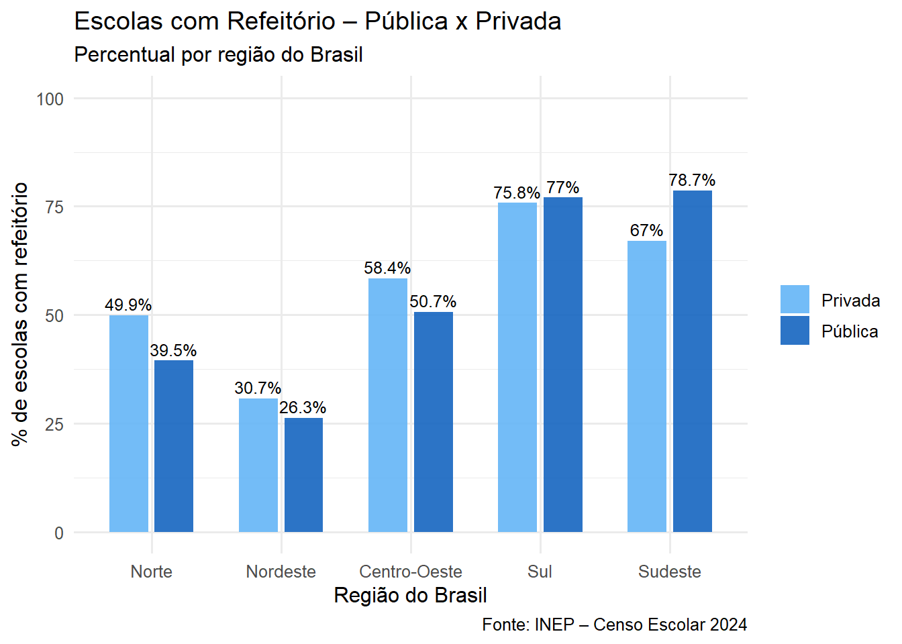
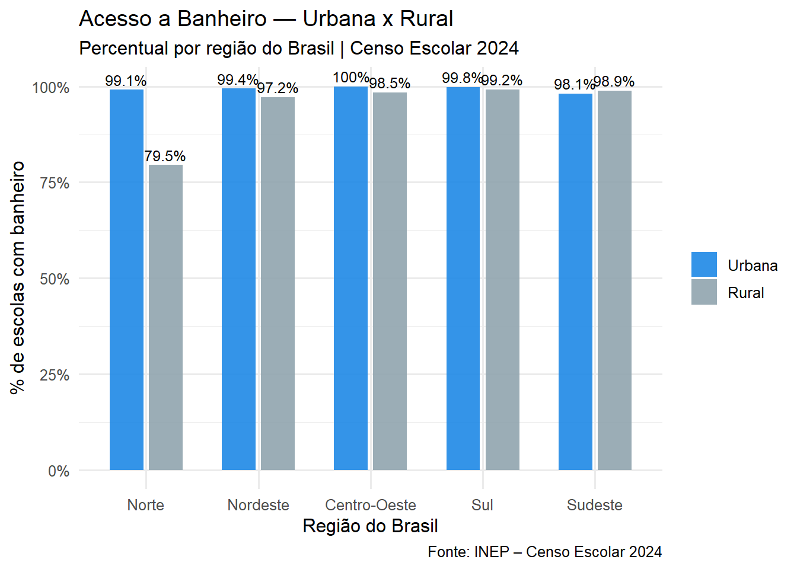

Infraestrutura Escolar e Desigualdade Socioeconômica no Brasil – Censo Escolar 2024
1 Introdução
A infraestrutura escolar é um dos pilares fundamentais para a garantia de uma educação de qualidade e equitativa. No contexto brasileiro, as condições físicas e materiais das escolas refletem diretamente as desigualdades socioeconômicas históricas e regionais do país. A análise dos dados do Censo Escolar 2024, principal levantamento estatístico sobre a educação básica no Brasil, evidencia avanços pontuais, mas também revela persistentes disparidades entre redes de ensino, regiões e contextos urbanos e rurais. O Brasil, enfrenta desafios estruturais que vão muito além da ampliação do acesso à escola. Questões como a falta de saneamento básico, de bibliotecas, laboratórios, conexão adequada à internet e espaços de lazer continuam impactando o cotidiano de milhões de estudantes. Em escolas localizadas em áreas vulneráveis, sobretudo nas regiões Norte e Nordeste, as deficiências na infraestrutura são mais acentuadas, comprometendo o processo de ensino-aprendizagem e a permanência dos alunos.
2 Objetivos
Avaliar o nível de infraestrutura básica e pedagógica das escolas brasileiras e analisar sua relação com as desigualdades regionais e socioeconômicas, utilizando os microdados do Censo Escolar 2024 como principal base.
Mensurar o acesso das escolas brasileiras a serviços básicos (água potável, energia, esgoto e banheiro).
Avaliar a presença de espaços pedagógicos e de convivência.
Comparar a infraestrutura entre redes de ensino (pública e privada) e localizações (urbana e rural).
3 Variáveis Selecionadas
SG_UF Sigla da Unidade da Federação onde a escola está localizada.
CO_UF Código numérico da Unidade da Federação, conforme a codificação do IBGE.
NO_REGIAO Nome da macrorregião brasileira: Norte, Nordeste, Centro-Oeste, Sudeste ou Sul.
TP_LOCALIZACAO Tipo de localização da escola (Urbana,Rural).
TP_DEPENDENCIA Dependência administrativa (Federal,Estadual, Municipal, Privada).
IN_AGUA_POTAVEL Indica se a escola possui acesso a água potável. |
IN_ENERGIA_REDE_PUBLICA Indica se a escola é atendida por energia elétrica da rede.
IN_ESGOTO_REDE_PUBLICAIndica se a escola está conectada à rede pública de esgoto.
IN_BANHEIRO Informa se a escola possui banheiros em suas instalações.
IN_BIBLIOTECA_SALA_LEITURA Indica se há biblioteca ou sala de leitura disponível.
IN_REFEITORIO Indica se a escola possui refeitório para alimentação dos alunos.
Como se distribui o acesso dos estabelecimentos de ensino básico aos serviços de infraestrutura essencial — água potável, energia elétrica e esgotamento sanitário — entre as diferentes regiões do Brasil, segundo o Censo Escolar 2024?
Observa-se que o acesso à água e à energia é praticamente universal em todas as regiões, com destaque para Sudeste, Sul e Centro-Oeste, enquanto o Norte apresenta os menores percentuais. O esgotamento sanitário é o ponto mais crítico, revelando fortes desigualdades regionais: as escolas do Sudeste possuem ampla cobertura, enquanto Nordeste e Norte concentram os maiores déficits. Em síntese, o gráfico evidencia que, embora o país tenha avançado em serviços essenciais, o saneamento básico escolar ainda é um desafio estrutural para a equidade educacional.
Como se diferencia o nível de infraestrutura básica entre as escolas públicas e privadas brasileiras, segundo o Censo Escolar 2024?

O gráfico evidencia uma diferença expressiva na qualidade da infraestrutura básica entre as redes pública e privada de ensino no Brasil. As escolas privadas apresentam níveis muito mais elevados e homogêneos de infraestrutura, com índices próximos de 100% em praticamente todos os estados, indicando acesso quase universal a água potável, energia elétrica e esgotamento sanitário. Nas escolas públicas, contudo, observa-se grande variação regional e níveis mais baixos de atendimento. Estados do Sudeste e Sul concentram os melhores resultados, com percentuais entre 80% e 90%, enquanto o Norte e parte do Nordeste apresentam os menores índices, em alguns casos abaixo de 70%. Esses resultados demonstram que a infraestrutura escolar no Brasil é fortemente marcada por desigualdades estruturais: as escolas privadas, com maior aporte de recursos, oferecem condições físicas mais adequadas, enquanto as redes públicas — especialmente em regiões menos desenvolvidas — ainda enfrentam déficits significativos em saneamento e serviços básicos, o que reflete diretamente nas condições de ensino e na equidade educacional.
Como se distribui o acesso a biblioteca ou sala de leitura entre as escolas públicas e privadas nas diferentes regiões do Brasil, segundo o Censo Escolar 2024?

O gráfico apresenta o percentual de escolas brasileiras que possuem biblioteca ou sala de leitura, comparando as redes pública e privada em cada região do país. Observa-se que, em todas as regiões, as escolas privadas apresentam maior disponibilidade desses espaços, com destaque para o Norte (74,4% contra 30%) e o Nordeste (76,1% contra 38,9%), onde as diferenças são mais acentuadas. No Centro-Oeste, a presença de bibliotecas também é superior na rede privada (77,9%) em relação à pública (61,7%), embora com menor disparidade. Já nas regiões Sul e Sudeste, o cenário se inverte: há maior equilíbrio no Sul (66,1% privadas e 64,2% públicas) e até uma vantagem para a rede pública no Sudeste (61,7% contra 56,4% nas privadas). De modo geral, o gráfico evidencia que o acesso a espaços de leitura ainda é desigual entre redes e regiões, sendo mais limitado nas escolas públicas do Norte e Nordeste. A existência de bibliotecas e salas de leitura está associada à qualidade do ensino e à permanência estudantil, o que reforça a necessidade de investimentos estruturais na rede pública, principalmente nas regiões mais vulneráveis, para reduzir as desigualdades educacionais e regionais.
Como se distribui o acesso a refeitório escolar entre as redes pública e privada nas diferentes regiões do Brasil?

Como se diferencia o acesso a banheiros escolares entre as escolas urbanas e rurais nas diferentes regiões do Brasil?

O gráfico revela que o acesso a banheiros nas escolas brasileiras é quase universal nas áreas urbanas, com percentuais próximos ou superiores a 99% em todas as regiões. Nas escolas rurais, embora o acesso também seja elevado, ainda se observam lacunas relevantes, especialmente no Norte (79,5%) e no Nordeste (97,2%), indicando desigualdades estruturais persistentes.As regiões Centro-Oeste, Sul e Sudeste apresentam paridade quase total entre zonas urbanas e rurais, com percentuais acima de 98% em ambos os contextos. Em síntese, o gráfico evidencia que o acesso a banheiros escolares — um item básico de dignidade e higiene — ainda reflete desigualdades territoriais, sobretudo nas regiões mais vulneráveis. Esse cenário reforça a importância de investimentos direcionados à infraestrutura rural, garantindo condições mínimas de saúde, conforto e permanência escolar.
4 Conclusão
A análise dos microdados do Censo Escolar 2024 demonstra que a infraestrutura escolar brasileira reflete as desigualdades socioeconômicas regionais e institucionais do país. Enquanto os serviços básicos — como água potável e energia elétrica — estão próximos da universalização, outros itens essenciais, como esgotamento sanitário, refeitórios e banheiros adequados em áreas rurais, ainda apresentam grandes disparidades regionais. Os resultados mostram que as escolas públicas e rurais concentram os maiores déficits estruturais, especialmente nas regiões Norte e Nordeste, enquanto as privadas e urbanas tendem a oferecer melhores condições. Essa desigualdade na infraestrutura escolar traduz-se em diferenças de qualidade e oportunidades de aprendizagem, perpetuando desigualdades sociais mais amplas. Portanto, os achados reforçam a importância de políticas públicas focalizadas em infraestrutura educacional, sobretudo nas redes públicas e zonas rurais, como estratégia essencial para promover equidade, permanência e qualidade no ensino básico brasileiro.
5 Referências
INEP – Instituto Nacional de Estudos e Pesquisas Educacionais Anísio Teixeira. https://www.gov.br/inep/pt-br/areas-de-atuacao/pesquisas-estatisticas-e-indicadores/censo-escolar
https://www.educacao.mg.gov.br/censo-escolar/
https://dados.gov.br/dados/conjuntos-dados/inep-microdados-do-censo-escolar-da-educacao-basica
https://revistas.faculdadefacit.edu.br/index.php/JNT/article/view/2562
quarto render reports/relatorio.qmd –to html quarto render reports/relatorio.qmd –to pdf quarto convert notebooks/exploracao.qmd –to ipynb